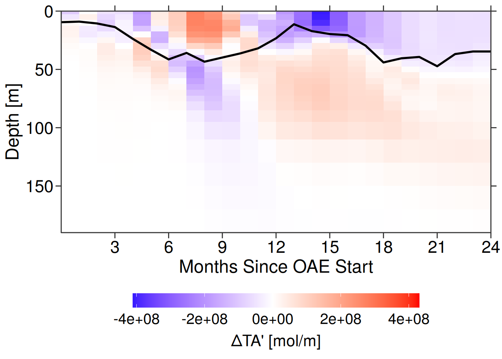
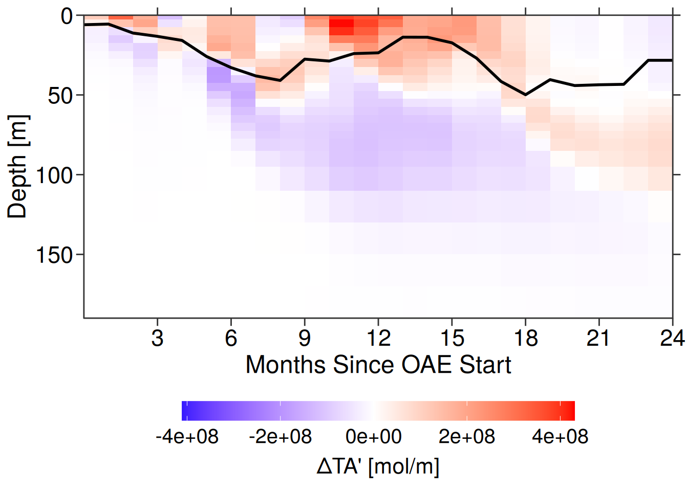
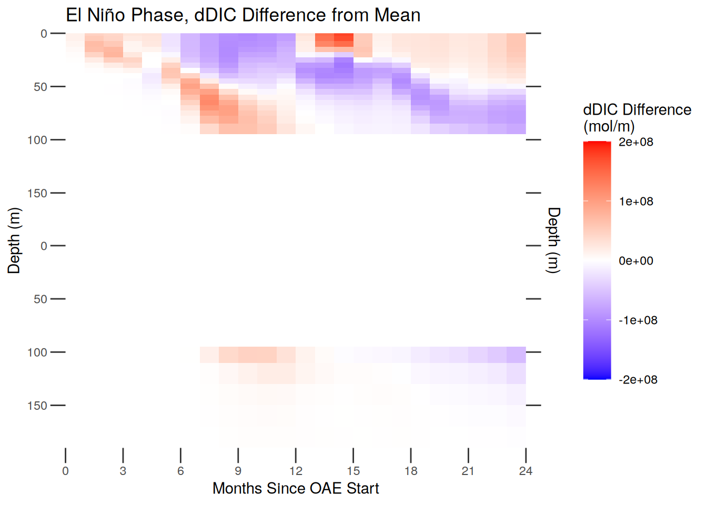
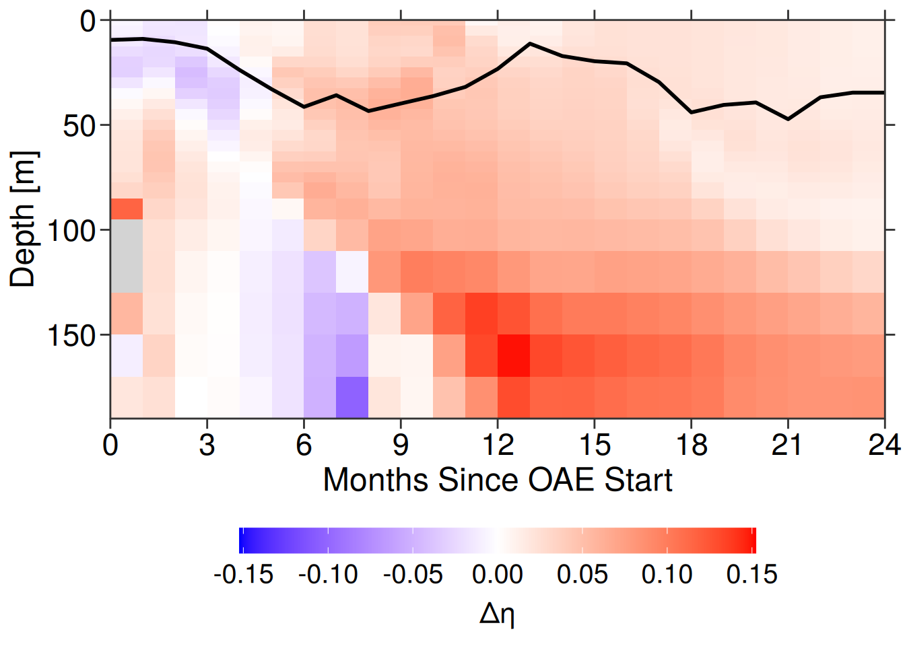

Hovmoeller dTA, dDIC, and CDR Efficiency Plots
Victoria Froh
07 April, 2025
Last updated: 2025-04-07
Checks: 7 0
Knit directory: oae_ccs_roms/
This reproducible R Markdown analysis was created with workflowr (version 1.7.1). The Checks tab describes the reproducibility checks that were applied when the results were created. The Past versions tab lists the development history.
Great! Since the R Markdown file has been committed to the Git repository, you know the exact version of the code that produced these results.
Great job! The global environment was empty. Objects defined in the global environment can affect the analysis in your R Markdown file in unknown ways. For reproduciblity it’s best to always run the code in an empty environment.
The command set.seed(20240919) was run prior to running
the code in the R Markdown file. Setting a seed ensures that any results
that rely on randomness, e.g. subsampling or permutations, are
reproducible.
Great job! Recording the operating system, R version, and package versions is critical for reproducibility.
Nice! There were no cached chunks for this analysis, so you can be confident that you successfully produced the results during this run.
Great job! Using relative paths to the files within your workflowr project makes it easier to run your code on other machines.
Great! You are using Git for version control. Tracking code development and connecting the code version to the results is critical for reproducibility.
The results in this page were generated with repository version 5a5f21a. See the Past versions tab to see a history of the changes made to the R Markdown and HTML files.
Note that you need to be careful to ensure that all relevant files for
the analysis have been committed to Git prior to generating the results
(you can use wflow_publish or
wflow_git_commit). workflowr only checks the R Markdown
file, but you know if there are other scripts or data files that it
depends on. Below is the status of the Git repository when the results
were generated:
Ignored files:
Ignored: .Rhistory
Ignored: .Rproj.user/
Untracked files:
Untracked: code/dist_maps.R
Untracked: code/flux_driver_correlations.Rmd
Untracked: code/flux_drivers_calcs.R
Untracked: code/lineplot_stacks.R
Untracked: code/subregions.Rmd
Untracked: surface_dataRG2.feather
Unstaged changes:
Modified: code/Workflowr_project_managment.R
Modified: code/regrid_surface_data.R
Modified: code/temperature_indices.Rmd
Note that any generated files, e.g. HTML, png, CSS, etc., are not included in this status report because it is ok for generated content to have uncommitted changes.
These are the previous versions of the repository in which changes were
made to the R Markdown (analysis/hovmo_plots.Rmd) and HTML
(docs/hovmo_plots.html) files. If you’ve configured a
remote Git repository (see ?wflow_git_remote), click on the
hyperlinks in the table below to view the files as they were in that
past version.
| File | Version | Author | Date | Message |
|---|---|---|---|---|
| Rmd | 5a5f21a | vgfroh | 2025-04-07 | Final code push |
| html | 91e2272 | vgfroh | 2025-02-19 | Build site. |
| Rmd | a36bcfe | vgfroh | 2025-02-19 | Mixing depth and air-sea co2 flux anlaysis |
| html | dd18a78 | vgfroh | 2025-02-03 | Build site. |
| Rmd | 639b38d | vgfroh | 2025-02-03 | Column integrated plots and hovmoeller plots completed |
Introduction
- Plotting dTA, dDIC, and CDR efficiency across depth and time of the OAE addition site.
- Also plotting their differences from a mean of all 3 phases to compare.
#loading packages
library(tidyverse)
library(data.table)
library(arrow)
library(scales)
# Path to intermediate computation outputs
path_outputs <- "/net/sea/work/vifroh/oae_ccs_roms_data/regrid_2/"
# Path to save practice plots when working on them
path_plots <- "/net/sea/work/vifroh/test_plots/"
# loading in previous saved depth integrated data for hovmo plots
lanina_depthint <- read_feather(
paste0(path_outputs, "lanina_depthintRG2.feather"))
neutral_depthint <- read_feather(
paste0(path_outputs, "neutral_depthintRG2.feather"))
elnino_depthint <- read_feather(
paste0(path_outputs, "elnino_depthintRG2.feather"))
# plotting
phase_titles <- c("La Niña", "Neutral", "El Niño")
phases <- c("lanina", "neutral", "elnino")
# loading in hbls weighted mean data
hbls_wmeans <- read_feather(paste0(path_outputs, "hbls_wmeansRG2.feather"))Regular Hovmoeller Plots
Change in total (added) alkalinity
# formatting tables, subsetting
phase_data <- list(lanina_depthint, neutral_depthint, elnino_depthint)
phase_data <- phase_data %>%
lapply(function(table) {
setDT(table)
table[, depth := as.numeric(depth)]
table[, dTA_sum := as.numeric(as.character(dTA_sum))]
table[, CDR_eff := as.numeric(as.character(CDR_eff))]
table[, month := .GRP, by = time] # gives index in order to each unique time
table <- table[month <= 24] # subsets to first two years
return(table)
})
# return tables to each item
lanina_depthint_sub <- phase_data[[1]]
neutral_depthint_sub <- phase_data[[2]]
elnino_depthint_sub <- phase_data[[3]]
# # removing negative data points and transform
# lanina_depthint_sub <- lanina_depthint_sub[dTA_sum > 0]
# lanina_depthint_sub[, dTA_log := log10(dTA_sum)]
# setting boundaries of bins
depth_ranges <- unique(lanina_depthint_sub[, .(depth)])
setorder(depth_ranges, depth)
depth_ranges[, ":=" (
depth_upper = (shift(depth, type = "lag", fill = 0) + depth) / 2, # set shallower boundary
depth_lower = (shift(depth, type = "lead", fill = max(depth)) + depth) / 2
)] # deeper bound
# merge depth ranges back to tables and divide into surface and subsurface
phase_data <- list(lanina_depthint_sub, neutral_depthint_sub, elnino_depthint_sub)
phase_data <- phase_data %>%
lapply(function(table) {
table <- merge(table, depth_ranges, by = "depth", all.x = TRUE)
table[, category := fifelse(depth < 100, "Surface", "Subsurface")]
table$category <- factor(table$category, levels = c("Surface", "Subsurface"))
return(table)
})
# return tables to each item
lanina_depthint_sub <- phase_data[[1]]
neutral_depthint_sub <- phase_data[[2]]
elnino_depthint_sub <- phase_data[[3]]
# plotting
create_hovmo_dTA <- function(data, title_text, phase) {
plot <- ggplot(data, aes(x = month, y = depth, fill = dTA_sum)) +
geom_rect(aes(ymin = depth_upper, ymax = depth_lower,
xmin = month - 1, xmax = month)) +
scale_x_continuous(breaks = seq(0, 24, by = 3), limits = c(0,24),
expand = c(0,0)) +
scale_y_reverse(expand = c(0, 0)) +
scale_fill_viridis_c(guide = guide_colorbar(
barwidth = unit(0.7, "cm"), barheight = unit(6, "cm")),
limits = c(-926000, 3443000000)) +
# limits = c(0, 3443000000)) +
facet_wrap(~category, scales = "free_y", ncol = 1) + # splits into two panels
labs(x = "Months Since OAE Start",
y = "Depth (m)",
fill = "Added Alkalinity\n(mol/m)",
title = paste0(title_text, " Phase Added Alkalinity")) +
theme_bw() +
theme(strip.text = element_blank(),
axis.ticks.length = unit(0.15, "inches"),
panel.border = element_blank(), # Remove box around facets
panel.grid = element_blank(),
panel.spacing = unit(0.5, "lines"),
strip.background = element_blank())
# print(plot)
# # save plot
# ggsave(paste0(path_plots, phase, "_hovmo_dTA.png"), plot = plot,
# width = 8, height = 6, dpi = 300)
}
lapply(seq_along(phase_data), function(i) {
create_hovmo_dTA(phase_data[[i]], phase_titles[i], phases[i])
})[[1]]
[[2]]
[[3]]
rm(create_hovmo_dTA, lanina_depthint, elnino_depthint, neutral_depthint)
gc() used (Mb) gc trigger (Mb) max used (Mb)
Ncells 1690355 90.3 3304081 176.5 2236495 119.5
Vcells 3055986 23.4 8388608 64.0 6077517 46.4Change in DIC
# building off of data ran in chunk above
# plotting dDIC
create_hovmo_dDIC <- function(data, title_text, phase) {
plot <- ggplot(data, aes(x = month, y = depth, fill = dDIC_sum)) +
geom_rect(aes(ymin = depth_upper, ymax = depth_lower,
xmin = month - 1, xmax = month)) +
scale_y_reverse(expand = c(0, 0)) +
scale_x_continuous(breaks = seq(0, 24, by = 3), limits = c(0,24),
expand = c(0,0)) +
scale_fill_viridis_c(guide = guide_colorbar(
barwidth = unit(0.7, "cm"), barheight = unit(6, "cm")),
limits = c(-480, 2008000000)) +
# limits = c(0, 2008000000)) +
facet_wrap(~category, scales = "free_y", ncol = 1) + # splits into two panels
labs(x = "Months Since OAE Start",
y = "Depth (m)",
fill = "Change in DIC\n(mol/m)",
title = paste0(title_text, " Phase Change in DIC")) +
theme_bw() +
theme(strip.text = element_blank(),
axis.ticks.length = unit(0.15, "inches"),
panel.border = element_blank(), # Remove box around facets
panel.grid = element_blank(),
panel.spacing = unit(0.5, "lines"),
strip.background = element_blank())
# print(plot)
# # save plot
# ggsave(paste0(path_plots, phase, "_hovmo_dDIC.png"), plot = plot,
# width = 8, height = 6, dpi = 300)
}
lapply(seq_along(phase_data), function(i) {
create_hovmo_dDIC(phase_data[[i]], phase_titles[i], phases[i])
})[[1]]
[[2]]
[[3]]
rm(create_hovmo_dDIC)
gc() used (Mb) gc trigger (Mb) max used (Mb)
Ncells 1696130 90.6 3304081 176.5 3304081 176.5
Vcells 3071516 23.5 8388608 64.0 6077517 46.4Integrated CDR Efficiency (full total dDIC per layer/full total dTA per layer)
# building off of data ran in chunk above
# plotting CDReff
create_hovmo_CDReff <- function(data, title_text, phase) {
plot <- ggplot(data, aes(x = month, y = depth, fill = CDR_eff)) +
geom_rect(aes(ymin = depth_upper, ymax = depth_lower,
xmin = month - 1, xmax = month)) +
scale_y_reverse(expand = c(0, 0)) +
scale_x_continuous(breaks = seq(0, 24, by = 3), limits = c(0,24),
expand = c(0,0)) +
scale_fill_viridis_c(guide = guide_colorbar(
barwidth = unit(0.7, "cm"), barheight = unit(6, "cm")),
limits = c(0, 1)) + # cutting off weird negative or >1 CDR effs
facet_wrap(~category, scales = "free_y", ncol = 1) + # splits into two panels
labs(x = "Months Since OAE Start",
y = "Depth (m)",
fill = "CDR Efficiency\n(Fraction)",
title = paste0(title_text, " Phase CDR Efficiency")) +
theme_bw() +
theme(strip.text = element_blank(),
axis.ticks.length = unit(0.15, "inches"),
panel.border = element_blank(), # Remove box around facets
panel.grid = element_blank(),
panel.spacing = unit(0.5, "lines"),
strip.background = element_blank())
# print(plot)
# # save plot
# ggsave(paste0(path_plots, phase, "_hovmo_CDReff.png"), plot = plot,
# width = 8, height = 6, dpi = 300)
}
lapply(seq_along(phase_data), function(i) {
create_hovmo_CDReff(phase_data[[i]], phase_titles[i], phases[i])
})[[1]]
[[2]]
[[3]]
rm(create_hovmo_CDReff)
gc() used (Mb) gc trigger (Mb) max used (Mb)
Ncells 1696480 90.7 3304081 176.5 3304081 176.5
Vcells 3073183 23.5 8388608 64.0 6077517 46.4Hovmoeller plots of the differences from the means of all 3 phases
Difference in added alkalinity from the phases’ mean
# building off of data ran in chunk above
# combining all three tables in to one
phase_list <- Map(function(table, phase) {
table[, phase := phase]
table[, .(month, depth, depth_upper, depth_lower, category, dTA_sum, dDIC_sum,
CDR_eff, phase)]
}, phase_data, phases)
phase_fulldata <- rbindlist(phase_list)
# calculating mean dTA, dDIC, and CDR-eff across all 3 phases
phase_fulldata[, ":=" (
dTA_mean = mean(dTA_sum, na.rm = TRUE),
dDIC_mean = mean(dDIC_sum, na.rm = TRUE),
CDR_effmean = mean(CDR_eff[CDR_eff >= 0 & CDR_eff <= 1] , na.rm = TRUE)
), by = .(month, depth)]
#saving data table with all 3 phases and the means
# write_feather(phase_fulldata, paste0(path_outputs, "full_depthint_means.feather"))
hbls_wmeans <- rbind(hbls_wmeans, hbls_wmeans[(.N-2):.N][, month := 25])
# plotting delta dTA from mean
create_hovmo_ddTA <- function(phase_name, title_text) {
phase_dt <- phase_fulldata[phase_fulldata$phase == phase_name,]
hbls_dt <- hbls_wmeans[hbls_wmeans$phase == phase_name]
plot <- ggplot() +
geom_rect(data = phase_dt, aes(xmin = month - 1, xmax = month,
ymin = depth_upper, ymax = depth_lower, fill = dTA_sum - dTA_mean)) +
scale_y_reverse(expand = c(0, 0), limits = c(190,0),
sec.axis = dup_axis(labels = NULL)) +
scale_x_continuous(breaks = seq(3, 24, by = 3), limits = c(0,24),
expand = c(0,0), sec.axis = dup_axis(labels = NULL)) +
scale_fill_gradient2(low = "blue", mid = "white", high = "red", midpoint = 0,
guide = guide_colorbar(barwidth = 20, barheight = 1,
title.position = "bottom", title.hjust = 0.5),
limits = c(-410000000, 430000000)) +
geom_path(data = hbls_dt, aes(x = month - 1, y = hbls_wmean),
color = "black", size = 1) +
# facet_wrap(~category, scales = "free_y", ncol = 1) + # splits into two panels
labs(x = "Months Since OAE Start",
y = "Depth [m]",
fill = "\u0394TA' [mol/m]",
# title = paste0(title_text, " Phase, Added Alkalinity Difference from Mean")
) +
theme_bw() +
theme(strip.text = element_blank(),
axis.text = element_text(size = 17, color = "black"),
axis.title = element_text(size = 18),
axis.ticks = element_line(size = 0.5),
axis.ticks.y.right = element_line(size = 0.5), # Add ticks to right side
axis.ticks.x.top = element_line(size = 0.5),
axis.ticks.length = unit(0.2, "cm"),
axis.title.x.top = element_blank(), # Remove x-axis title on top
axis.title.y.right = element_blank(),
# panel.border = element_blank(), # Remove box around facets
panel.grid = element_blank(),
panel.spacing = unit(0.5, "lines"),
strip.background = element_blank(),
legend.position = "bottom",
legend.direction = "horizontal",
legend.text = element_text(size = 15),
legend.title = element_text(size = 16)
) +
coord_cartesian(clip = 'off', expand = FALSE)
# print(plot)
# # save plot
# ggsave(paste0(path_plots, phase_name, "_hovmo_ddTA.png"), plot = plot,
# width = 12, height = 8, dpi = 300)
}
lapply(seq_along(phases), function(i) {
create_hovmo_ddTA(phases[i], phase_titles[i])
})Warning: Using `size` aesthetic for lines was deprecated in ggplot2 3.4.0.
ℹ Please use `linewidth` instead.
This warning is displayed once every 8 hours.
Call `lifecycle::last_lifecycle_warnings()` to see where this warning was
generated.Warning: The `size` argument of `element_line()` is deprecated as of ggplot2 3.4.0.
ℹ Please use the `linewidth` argument instead.
This warning is displayed once every 8 hours.
Call `lifecycle::last_lifecycle_warnings()` to see where this warning was
generated.[[1]]Warning: Removed 144 rows containing missing values or values outside the scale range
(`geom_rect()`).
[[2]]Warning: Removed 144 rows containing missing values or values outside the scale range
(`geom_rect()`).
[[3]]Warning: Removed 144 rows containing missing values or values outside the scale range
(`geom_rect()`).
rm(phase_list, create_hovmo_ddTA)
gc() used (Mb) gc trigger (Mb) max used (Mb)
Ncells 1724816 92.2 3304081 176.5 3304081 176.5
Vcells 3186725 24.4 8388608 64.0 6077517 46.4Difference in dDIC from the phases’ mean
# building off of data ran in chunk above
# plotting delta dDIC from mean
create_hovmo_ddDIC <- function(phase_name, title_text) {
phase_dt <- phase_fulldata[phase_fulldata$phase == phase_name,]
hbls_dt <- hbls_wmeans[hbls_wmeans$phase == phase_name]
plot <- ggplot() +
geom_rect(data = phase_dt, aes(xmin = month - 1, xmax = month,
ymin = depth_upper, ymax = depth_lower, fill = dDIC_sum - dDIC_mean)) +
scale_x_continuous(breaks = seq(0, 24, by = 3), limits = c(0,24),
expand = c(0,0)) +
scale_y_reverse(expand = c(0, 0), limits = c(190,0), sec.axis = dup_axis(labels = NULL)) +
scale_fill_gradient2(low = "blue", mid = "white", high = "red", midpoint = 0,
guide = guide_colorbar(
barwidth = unit(0.7, "cm"), barheight = unit(6, "cm")),
limits = c(-200000000, 200000000)) +
facet_wrap(~category, scales = "free_y", ncol = 1) + # splits into two panels
labs(x = "Months Since OAE Start",
y = "Depth (m)",
fill = "dDIC Difference\n(mol/m)",
title = paste0(title_text, " Phase, dDIC Difference from Mean")) +
theme_bw() +
theme(strip.text = element_blank(),
axis.ticks.length = unit(0.15, "inches"),
panel.border = element_blank(), # Remove box around facets
panel.grid = element_blank(),
panel.spacing = unit(0.5, "lines"),
strip.background = element_blank())
# print(plot)
# # save plot
# ggsave(paste0(path_plots, phase_name, "_hovmo_ddDIC.png"), plot = plot,
# width = 8, height = 6, dpi = 300)
}
lapply(seq_along(phases), function(i) {
create_hovmo_ddDIC(phases[i], phase_titles[i])
})[[1]]Warning: Removed 144 rows containing missing values or values outside the scale range
(`geom_rect()`).
[[2]]Warning: Removed 144 rows containing missing values or values outside the scale range
(`geom_rect()`).
[[3]]Warning: Removed 144 rows containing missing values or values outside the scale range
(`geom_rect()`).
rm(create_hovmo_ddDIC)
gc() used (Mb) gc trigger (Mb) max used (Mb)
Ncells 1733189 92.6 3304081 176.5 3304081 176.5
Vcells 3202621 24.5 8388608 64.0 6077517 46.4Difference in CDR efficiency from the phases’ mean.
Wonky efficiencies outside the range from 0 to 1 were filtered out (primarily below 150m)
# building off of data ran in chunk above; CDR efficiencies outside 0-1 were
# excluded from the mean calculation since they are casued by errors
# plotting delta dDIC from mean
create_hovmo_dCDReff <- function(phase_name, title_text) {
phase_dt <- phase_fulldata[phase_fulldata$phase == phase_name,]
hbls_dt <- hbls_wmeans[hbls_wmeans$phase == phase_name]
# filter out negative dTA/dDIC/wrong CDReff as these will make weird/incorrect efficiency
phase_dt <- phase_dt[dTA_sum < 0, dTA_sum := NA]
phase_dt <- phase_dt[dDIC_sum < 0, dDIC_sum := NA]
phase_dt <- phase_dt[CDR_eff < 0 | CDR_eff > 1, CDR_eff := NA]
phase_dt <- phase_dt[depth < 200]
plot <- ggplot() +
geom_rect(data = phase_dt, aes(xmin = month - 1, xmax = month,
ymin = depth_upper, ymax = depth_lower, fill = CDR_eff - CDR_effmean)) +
scale_x_continuous(breaks = seq(0, 24, by = 3), limits = c(0,24),
expand = c(0,0), sec.axis = dup_axis(labels = NULL)) +
scale_y_reverse(expand = c(0, 0), limits = c(190,0),
sec.axis = dup_axis(labels = NULL)) +
scale_fill_gradient2(na.value = "lightgray", low = "blue", mid = "white",
high = "red", midpoint = 0,
guide = guide_colorbar(
barwidth = 20, barheight = 1, title.position = "bottom", title.hjust = 0.5),
limits = c(-0.152, 0.152)) +
geom_path(data = hbls_dt, aes(x = month - 1, y = hbls_wmean),
color = "black", size = 1) +
# facet_wrap(~category, scales = "free_y", ncol = 1) + # splits into two panels
labs(x = "Months Since OAE Start",
y = "Depth [m]",
fill = "\u0394\u03B7",
# title = paste0(title_text, " Phase, CDR Efficiency Difference from Mean")
) +
theme_bw() +
theme(strip.text = element_blank(),
axis.text = element_text(size = 17, color = "black"),
axis.title = element_text(size = 18),
axis.ticks = element_line(size = 0.5),
axis.ticks.y.right = element_line(size = 0.5), # Add ticks to right side
axis.ticks.x.top = element_line(size = 0.5),
axis.ticks.length = unit(0.2, "cm"),
axis.title.x.top = element_blank(), # Remove x-axis title on top
axis.title.y.right = element_blank(),
# panel.border = element_blank(), # Remove box around facets
panel.grid = element_blank(),
panel.spacing = unit(0.5, "lines"),
strip.background = element_blank(),
legend.position = "bottom",
legend.direction = "horizontal",
legend.text = element_text(size = 15),
legend.title = element_text(size = 16)
) +
coord_cartesian(clip = 'off', expand = FALSE)
# # save plot
# ggsave(paste0(path_plots, phase_name, "_hovmo_dCDReff_200.png"), plot = plot,
# width = 12, height = 8, dpi = 300)
}
lapply(seq_along(phases), function(i) {
create_hovmo_dCDReff(phases[i], phase_titles[i])
})[[1]]
[[2]]
[[3]]
rm(list = ls())
gc() used (Mb) gc trigger (Mb) max used (Mb)
Ncells 1726400 92.2 3304081 176.5 3304081 176.5
Vcells 3136575 24.0 8388608 64.0 6077517 46.4
sessionInfo()R version 4.4.2 (2024-10-31)
Platform: x86_64-pc-linux-gnu
Running under: openSUSE Leap 15.6
Matrix products: default
BLAS/LAPACK: /usr/local/OpenBLAS-0.3.28/lib/libopenblas_haswellp-r0.3.28.so; LAPACK version 3.12.0
locale:
[1] LC_CTYPE=en_US.UTF-8 LC_NUMERIC=C
[3] LC_TIME=en_US.UTF-8 LC_COLLATE=en_US.UTF-8
[5] LC_MONETARY=en_US.UTF-8 LC_MESSAGES=en_US.UTF-8
[7] LC_PAPER=en_US.UTF-8 LC_NAME=C
[9] LC_ADDRESS=C LC_TELEPHONE=C
[11] LC_MEASUREMENT=en_US.UTF-8 LC_IDENTIFICATION=C
time zone: Europe/Zurich
tzcode source: system (glibc)
attached base packages:
[1] stats graphics grDevices utils datasets methods base
other attached packages:
[1] scales_1.3.0 arrow_18.1.0.1 data.table_1.16.2 lubridate_1.9.3
[5] forcats_1.0.0 stringr_1.5.1 dplyr_1.1.4 purrr_1.0.2
[9] readr_2.1.5 tidyr_1.3.1 tibble_3.2.1 ggplot2_3.5.1
[13] tidyverse_2.0.0 workflowr_1.7.1
loaded via a namespace (and not attached):
[1] sass_0.4.9 utf8_1.2.4 generics_0.1.3 stringi_1.8.4
[5] hms_1.1.3 digest_0.6.37 magrittr_2.0.3 timechange_0.3.0
[9] evaluate_1.0.1 grid_4.4.2 fastmap_1.2.0 rprojroot_2.0.4
[13] jsonlite_1.8.9 processx_3.8.4 whisker_0.4.1 ps_1.8.1
[17] promises_1.3.2 httr_1.4.7 fansi_1.0.6 viridisLite_0.4.2
[21] jquerylib_0.1.4 cli_3.6.3 crayon_1.5.3 rlang_1.1.4
[25] bit64_4.5.2 munsell_0.5.1 withr_3.0.2 cachem_1.1.0
[29] yaml_2.3.10 tools_4.4.2 tzdb_0.4.0 colorspace_2.1-1
[33] httpuv_1.6.15 assertthat_0.2.1 vctrs_0.6.5 R6_2.5.1
[37] lifecycle_1.0.4 git2r_0.35.0 bit_4.5.0 fs_1.6.5
[41] pkgconfig_2.0.3 callr_3.7.6 pillar_1.9.0 bslib_0.8.0
[45] later_1.4.1 gtable_0.3.6 glue_1.8.0 Rcpp_1.0.13-1
[49] xfun_0.49 tidyselect_1.2.1 rstudioapi_0.17.1 knitr_1.49
[53] farver_2.1.2 htmltools_0.5.8.1 labeling_0.4.3 rmarkdown_2.29
[57] compiler_4.4.2 getPass_0.2-4